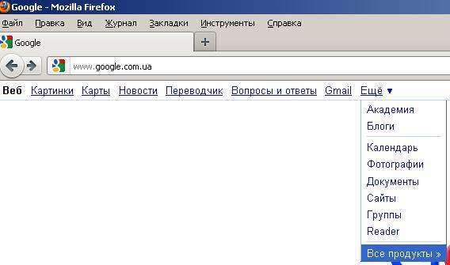
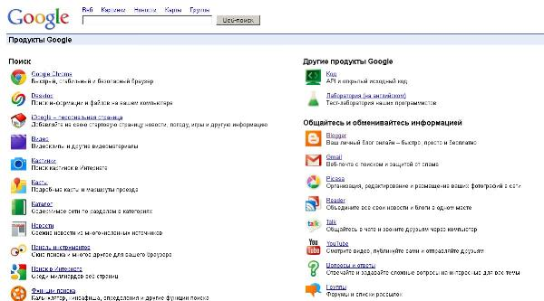

Лекція 1
Дана лекція присвячена короткомоу огляду основних сервісів Google
Google - всесвітньо відома пошукова система, але крім звичайного пошуку, вона пропонує ряд сервісів та інструментів для різних потреб.
Більшість з них - веб-додатки, що вимагають від користувача тільки наявності браузера, в якому вони працюють, і інтернет-підключення. Це дозволяє використовувати дані в будь-якій точці планети і не бути прив'язаним до одного комп'ютера. Деякі з сервісів потребують встановлення додаткових програм (програвача Flash-графіки або клієнта для миттєвих повідомлень), крім того, для комфортної роботи необхідно високошвидкісне підключення (від 512 Кб/с для Google Video, від 256 Кб/с для Google Earth).
Переваги сервісів та інструментів Google - наявність централізованого сховища даних і продуманий інтерфейс.
Сервіси Google:
- «Питання і відповіді» (раніше Google Answers) - сервіс для колективного отримання відповідей на виникаючі питання.
- Google AdSense - сервіс контекстної реклами, що дозволяє заробити господарям сторінок з великою відвідуваністю. Програма автоматично доставляє текстові та графічні об'яви, розраховані на веб-сайт і його зміст.
- Google AdWords - сервіс контекстної реклами, працює з ключовими словами.
- Google Alerts - надсилання на пошту результатів пошуку з заданою періодичністю.
- Google Analytics - безкоштовний сервіс, що надає детальну статистику по трафіку веб-сайту.
- Google ArtProject - інтерактивно-представлені популярні музеї світу.
- Google App Engine - платформа для створення та хостингу масштабованих веб-додатків на серверах компанії Google.
- Google Apps - сервіс для використання служб Google разом зі своїм доменом.
- Google Merchant Center (раніше Google Base) - дозволяє власникам контенту поміщати структуровану інформацію в сховище, автоматично отримуючи можливість пошуку за цією інформацією.
- Blogger - це сервіс для ведення блогів, що дозволяє тримати на своєму хостингу не лише програмне забезпечення, а всю інформацію: записи, коментарі та персональні сторінки в СУБД на серверах Google.
- Google Bookmarks - дозволяє відзначати сайти закладками, додавати до них ярлики та примітки. По ярликах і приміток можна робити пошук, закладки зберігаються на сервері та доступні з будь-якого комп'ютера.
- Google Buzz - інструмент соціальної мережі, розроблений компанією Google та інтегрований в Gmail.
- Google Calendar - онлайновий сервіс для планування зустрічей, подій і справ з прив'язкою до календаря. Можливо спільне використання календаря групою користувачів. Крім того, сервіс інтегрований з Gmail.
- Google Checkout - сервіс обробки онлайнових платежів, що має на меті спростити процес оплати онлайнових покупок. Веб-майстри можуть використовувати даний сервіс в якості однієї з форм оплати. Працює по всьому світу.
- Google Docs - веб-орієнтований додаток для роботи з документами, що допускає спільне використання документа.
- Google Directory (раніше Catalogs) - вміст сайти, впорядковані за тематичним принципом. Закрився.
- Google Dictionary - сервіс для перекладу окремих слів на інші мови.
- Google Finance - сайт-агрегатор біржової інформації.
- iGoogle (раніше Google Portal, Google Fusion і Personalized Homepage) - сервіс для створення персональних сторінок, що використовують AJAX.
- Gmail - безкоштовна електронна пошта з великим об'ємом місця для зберігання повідомлень (більше 7,2 Гб), з доступом по POP3 і зручним веб-інтерфейсом. Також є OpenID-провайдером для всіх служб Google.
- Google Groups - архів конференцій Usenet.
- Google Health - являє собою онлайнову особисту медичну картку.
- Google Knol - вікі-енциклопедія, що складається з авторських статей по заданих тем.
- Google Лабораторія - інкубатор ідей для нових сервісів, призначений для тестування інтерфейсу і т. п.
- Google Maps () - набір карт, побудованих на основі безкоштовного картографічного сервісу.
- Google Maps API - інтерфейс, що дозволяє вбудовувати карти на зовнішні сайти за допомогою JavaScript.
- Google Mars - карти Марса.
- Google Moon - карти Місяця.
- Google Mobile - інтерфейс для використання додатків Google за допомогою мобільних пристроїв.
- Google News - автоматично створюваний сайт новин, на якому зібрані заголовки більш ніж з 400 джерел новин по всьому світу: схожі статті групуються, а потім показуються відповідно до особистими інтересами кожного читача.
- Google Notebook - веб-додаток, що дозволяє створювати, зберігати і редагувати нотатки на сервері. Текст в нотатках може містити URL, а також містити розмітку. Частково закрито в січні 2009 року.
- Google Orkut - соціальна мережа, в якій користувачі можуть вказувати свою персональну та професійну інформацію, створювати зв'язку з друзями і об'єднуватися в співтовариства по інтересах.
- Google Picasa Web - персональні галереї фотографій.
- Google Public DNS - альтернативний DNS-сервер Google.
- Google Reader - RSS-агрегатор, що дозволяє читати потоки новин у форматах Atom і RSS.
- Google Talk - програма для обміну миттєвими повідомленнями (на основі протоколу XMPP) і інтернет-телефон.
- Google Search History - історія пошукових запитів користувача.
- Google Sites - безкоштовний хостинг, використовує вікі-технологію.
- Google Translate - система статистичного машинного перекладу слів, текстів, фраз, веб-сторінок між якими парами мов.
- Google Voice - передача голосу по протоколу VoIP.
- Google Wave - сайт, який об'єднує в собі функції електронної пошти, вики, соціальної мережі, системи миттєвих повідомлень. Закрився.
- Google Webmasters - інструменти для вебмастерів.
- Picnik - онлайн-сервіс для редагування фотографій.
- YouTube - відеохостинг.
- Google One Pass - онлайн-магазин, де видавці можуть продавати доступ до свого контенту.
- Google + - Соціальна мережа.
Спеціальний пошук Google:
- Google Blog Search - сервіс пошуку по блогах. У результати пошуку включені всі блоги на всіх мовах.
- Google Book Search - повнотекстовий пошук по книгах, оцифрованих компанією Google (понад 10 мільйонів книг з найбільших бібліотек США).
- Google Code Search - пошук по вихідних кодів, викладеному в Інтернет у відкритому вигляді.
- Google Custom Search - сервіс для створення власної системи пошуку на основі пошукової системи Google.
- Froogle - це пошуковий сервіс Google для отримання інформації про пропозиції товарів, які можна замовити в інтернет-магазинах. На даний момент діє тільки для США і Канади.
- Hackser Style Google - інтерфейс пошуку мовою Leet.
- Google Images - сервіс пошуку зображень в пошуковій системі Google.
- Google Government Search Google - пошук по урядових сайтів Сполучених Штатів Америки.
- Special Searches - пошук на спеціалізованих сайтах (BSD, Linux, Mac OS X і Microsoft).
- Movie Showtimes - кіноафіша.
- Google Patents Search - пошук по патентам, серед понад 7 мільйонів доступних в базі даних.
- Google Scholar - сервіс для пошуку по науковим джерелами: статтями, книгами, дисертацій, опублікованими різними науковими організаціями та професійними співтовариствами.
- Google SSL - безпечний пошук від Google. Зв'язок між користувачем і сервером здійснюється по зашифрованому каналу, що виключає можливість перехоплення інформації користувача третіми особами. На даний момент працює в режимі «Beta»; не доступні ніякі сервіси крім «Пошук Google».
- Google Suggest - частина пошуку Google, технологія автозаповнення рядка пошукового запиту на основі загальної статистики найпопулярніших запитів.
- Google Video - сервіс для пошуку, перегляду і збереження відео.
- Google Weather - частина пошуку Google, дозволяє отримувати 4-денний прогноз погоди для міст світу.
- Телефонна книга - служба Google, яка дозволяє знайти телефонні номери і адреси, опубліковані в загальнодоступних джерелах. Результати пошуку з адресної книги Google з'являються над іншими результатами при введенні певних типів запитів (імені, прізвища, міста і т. д.).
- Фото та мультимедіа - інструмент, що дозволяє використовувати Google на безлічі різних мов.
- Калькулятор - сервіс для розрахунків, вбудований в рядок пошуку. Наприклад, якщо задати пошук рядку 900 +600 * 2 - (3 +1), то буде виданий відповідь 2096, а також інтернет-сторінки, де такий рядок може зустрічатися. Сервіс знає безліч математичних функцій, вміє дотримуватися пріоритет операцій.
- Конвертор валют - наприклад, 600 USD in RUR - скільки буде $ 600 в рублях.
Інструменти:
- Chromium - веб-браузер з відкритим вихідним кодом, розроблений компанією Google.
- Google Chrome - браузер, що розробляється компанією Google на основі вільного браузера - Chromium, забезпечений рядом невільних елементів і компонентами, що відповідають за збір інформації про відвідані сторінках.
- Google Code - сайт для розробників, які цікавляться розробкою відкритого програмного забезпечення, пов'язаного з продуктами компанії Google. Сайт містить вихідні коди і список їх сервісів з публічним API.
- Project Hosting - безкоштовний спеціалізований хостинг GPL-проектів та ін вільних проектів.
- Google Pack - настановний пакет, який об'єднує пакети ряду продуктів Google (Google Earth, - Picasa, Google Desktop та ін) і кілька сторонніх продуктів (Mozilla Firefox, Adobe Reader та ін.)
- Google Deskbar - розміщує пошук Google на робочому столі.
- Google Desktop - засіб пошуку на комп'ютері користувача. Програма встановлюється локально та індексує повідомлення електронної пошти, текстові документи, документи Microsoft Office, обговорення з AOL Instant Messanger, історію переходів у веб-браузері, PDF-документи, музичні файли, зображення, відеофайли.
- Google Earth - модель планети Земля, створена за допомогою супутникових знімків.
- Picasa - програма для роботи з цифровими фотографіями, інтегрована з Google Blogger і Gmail.
- Hello - доповнення до програми Picasa, що дозволяє ділитися своїми фотографіями з друзями, без використання веб-сайту або електронної пошти. Зображення пересилаються безпосередньо від одного клієнта до іншого.
- Google Toolbar - розширення для браузерів Internet Explorer і Mozilla Firefox, яке представляє з себе панель пошукового сервісу Google і виконує ряд додаткових функцій.
- Google Web Accelerator - програма, що прискорює роботу браузера шляхом кешування і попереднього скачування інформації, яка, можливо, буде цікавити користувача. Програма використовує проксі-сервера, що належать Google.
- Google Trends - частотність пошукових запитів.
Апаратне забезпечення:
- Google Search Appliance - це апаратно-програмне рішення, призначене для корпоративної інтранет-мережі. Цей пристрій виконує періодичний перегляд і індексування документів (у базовій моделі - до 500 000 документів) для пошуку, на внутрішніх або зовнішніх корпоративних веб-сайтах або інших ресурсах, доступних через веб.
- Google Mini - міні-версія пристрою Search Appliance, названа Google Mini і призначена для невеликих і середніх компаній. Базова модель пристрою індексує 100 000 документів. У січні 2006 року були запропоновані ще дві моделі, на 200 000 і на 300 000 документів. Крім того, 2 березня 2006 року була анонсована модель на 50 000 документів.
Для доступа до всіх можливих сервісів необхідно перейти за наступним посилання: http://www.google.com.ua/intl/ru/options/


Висновки:
В данному розділі був проведений огляд сервісів, що їх надає Google, як бачимо, їх кількість суттєва, а за спрямованістю вони охоплюють майже весь спектр Інтерент технологій.